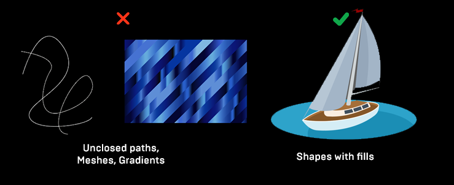
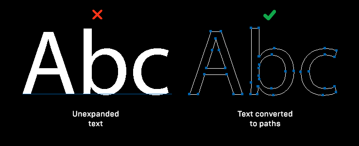
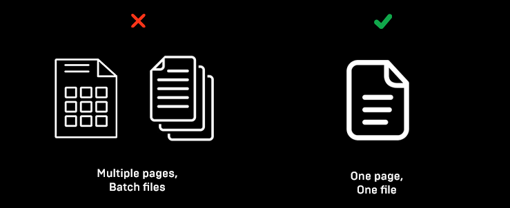

Drag and drop your SVG file, and it will be imported in After Effects as a Shape.
 • Use only Shape graphics with closed paths. • Extension doesn’t support gradients, patterns or unexpanded fonts. Unexpanded = not converted to paths. To convert them in Illustrator, select text and go Object > Expand.
  • No batch or multiple pages files support.• Install ZXP file. Use https://aescripts.com/learn/zxp-installer/ or https://zxpinstaller.com/ or Adobe Creative Cloud or rename zxp into zip and extract com.gothlab.github.io.SVG2AE into “Program Files/Common Files/Adobe/CEP/extensions/” folder.
• Create New Composition • Go Window > Extensions > !GothLab:SVG2AE • Select Layers panel (Important) (!) • Drag and drop your SVG file into extension window • Your file will be added as a Shape.
Use pdf file import if you don’t want shape file. Click on cogwheel icon in the top right corner and tick - Import as PDF
Extension grabs your default documents folder. If its locked for writing files, click on cogwheel icon in the top right corner and write custom path.
Made using CEP8. Requires CC 2018+ version of After Effects (15+). Not tested on Mac OSX